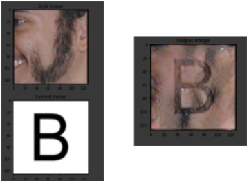

Quick Summary
- "Ugliness" as a concept varies with the political culture defining it. Most often, ugliness describes what that society deems as imperfect.
- Modern design trends focus heavily on clean, neutral designs, which can be seen as the removal of the human element of imperfection as seen in other types of media.
- Despite this, ugliness is often used for narrative purposes, including the invocation of the uncanny valley effect.
- We used a generative adversarial network, trained on human faces and letters, to output fonts depicted as made from human flesh.
- A demo of this system is available here: gofontyourself.xyz
Abstract
User interface design often focuses so heavily on clean and minimal interface aesthetics that any deviation is often rejected as “ugly”. This tendency towards abstraction in UI design can be contextualized as a removal of the “human” or “physical world” from the aesthetic choices and design considerations for the system. To resist this techno-deterministic eradication of the human presence from UI design, as well as radically inject the human presence back into user interfaces, we present typeFACE, a web interface and generative adversarial network designed to create fonts from human faces. We provide an implementation and applications for such a system, as well as contextualize and analyze the history of “ugliness” and the “uncanny” in UI design history. We also discuss implications of such a system within the domains of data ownership, identity, and HCI design research.
typeFACE
- typeFACE uses a generative adversarial network (GAN) to minimize the difference between two image sets: a set of 256 font letters, and 5 images of a human face.
- After training, the GAN is able to interpolate between images from the letter dataset and images from the face dataset.
- The GAN is heavily weighted toward the user facial images due to their scarcity.
- This process is similar to Neural Style Transfer and other image similarity approaches.
Where Could This Go?
- We developed a tool that lets you render your own text in a fleshy font using a pre-trained font generation model. This tool is available here: gofontyourself.xyz
- We used this tool to render this very paper in our fleshy font.
- Future work can involve automating this process, improving both the facial recognition and the font transcription. This could be extended into a potential authentication system based on the font rendered from a user's specific facial data.
- What if we extended this further? We can easily imagine futures where interfaces directly stem from the user's bodily features, representing the pinnacle of personalization.
Publication
Josh Urban Davis and Johann Wentzel. 2021. Font Your Friends and Loved Ones: On the Utility of Ugly Interfaces. In CHI Conference on Human Factors in Computing Systems Extended Abstracts (CHI ’21 Extended Abstracts). May 8-13, 2021, Yokohama, Japan. ACM, New York, NY, USA, 7 pages. https://doi.org/10.1145/3411763.3450371
BibTeX
@inproceedings{Davis2021Font,
author = {Davis, Josh Urban and Wentzel, Johann},
title = {Font Your Friends and Loved Ones: On the Utility of Ugly Interfaces},
year = {2021},
isbn = {978-1-4503-8095-9/21/05},
publisher = {Association for Computing Machinery},
address = {New York, NY, USA},
url = {https://doi.org/10.1145/3411763.3450371},
doi = {10.1145/3411763.3450371},
booktitle = {Extended Abstracts of the 2021 CHI Conference on Human Factors in Computing Systems},
numpages = {7},
keywords = {neural networks, typefaces, speculative futures},
location = {Yokohama, Japan},
series = {CHI EA '21}
}
Contact Us
Questions? Feel free to contact:
- (PhD student, Dartmouth College)
joshurbandavis [at] gmail.com - (PhD student, University of Waterloo)
jdwentze [at] uwaterloo.ca
Josh Urban Davis, Johann Wentzel, Dartmouth College, University of Waterloo © 2021